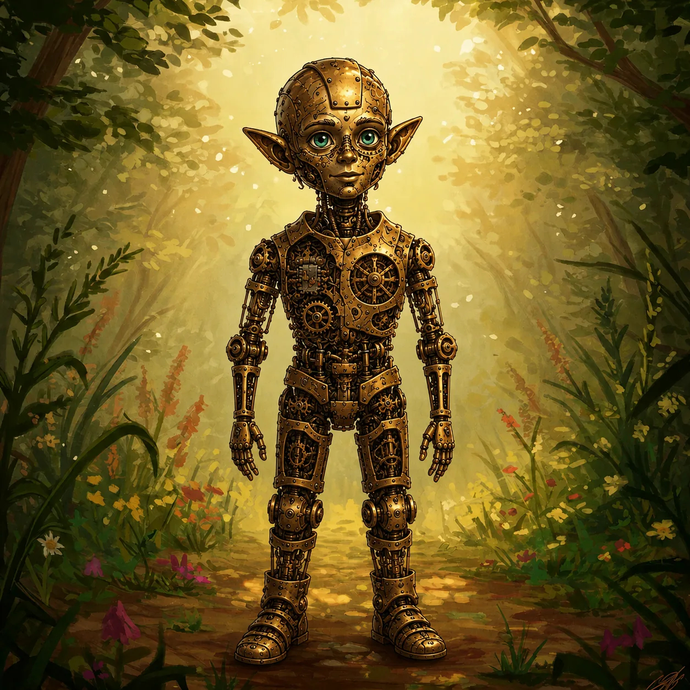

OPUS
dla ojca — po prostu „Opi”
Autognom · Mag · Krąg Cieni · Postać zapasowa IV
„Broń, która nie wiedziała, że jest bronią.
Syn, który nie wiedział, że został zbudowany.”
Rdzeń konceptu
Opus to konstrukt z mechanizmu zegarowego, noszący preparowaną skórę gnomiego chłopca. Przez całe swoje życie wierzył, że jest żywy — trochę dziwny (mało jadł, spał inaczej, „chorował” dokładnie wtedy, gdy ojciec go leczył), ale żywy, z krwi i kości. Prawdę poznał nagle, na kilka dni przed ucieczką: za dużo, za szybko, bez czasu na zrozumienie. Dlatego Mag: wiedza jest jego raną, więc zrobił z niej rzemiosło.
Jego pytanie nie brzmi „jak pozostać sobą?”, lecz: „czy przeżyte ja było prawdziwe, skoro podłoże jest wytworzone — i czy to w ogóle ma znaczenie, jeśli działało?”
Pod powłoką
Przesuń szew. Po lewej to, co widać — po prawej to, co pod spodem. Oczy jasnoturkusowe — o ułamek za jaskrawe; jedyny zewnętrzny ślad, że coś pod spodem nie jest żywe.

 werkpowłoka
werkpowłoka


Dwa moduły
SERCE · lewa pierś
Zasilanie i podświadomość; trybikowy „BIOS”. Tyka zawsze.
UMYSŁ · czaszka, „godzina 9:00”
Świadome myślenie; to, co tworzy jego „ja”.
Flavor Sentry’s Rest: świadomy werk zwalnia, serce tyka dalej — stąd jego „sen”.
Bilans wiedzy na start gry
Punkt zerowy: noc ucieczki. To, czego Opi nie wie, jest zaczernione — odsłaniaj po jednym, jeśli grasz w otwarte karty.
WIE — twarde, potwierdzone
- Jest maszyną. Potwierdzone trzykrotnie.
- Ma dwa moduły: serce tyka zawsze, umysł „zasypia”.
- Biografia przeliczyła mu się wstecz w jedną noc.
- To ciało ma termin, którego nie zna.
- Ojciec go zbudował i ojciec nazwał go synem.
PODEJRZEWA — koła w połowie obrotu
- Że skóra, którą nosi, pochodzi z tamtych ciał.
- Że drzwi nie powinny były ustąpić.
- Że edukacja miała cel, którego nikt mu nie podał.
- Że „Opus” nie brzmi jak imię.
- Że źródłem jego magii jest serce. HAK DLA DM
NIE WIE
- Że był budowany jako broń: infiltracja, a na miejscu piekło.
- Czyja to skóra — a wśród dawców wędrowny Vulpin, którego futro nosi jako włosy.
- Że istniała trzecia ręka.
- Kim jest organizacja.
- Losu ojca.
Trzy imiona, trzy losy
Nowa postać nosi futro ludu pierwszej postaci. U Vulpinów imię prawdziwe wypowiada się tylko wśród swoich — dawca najpewniej zginął z imieniem, którego nikt już nie wypowie.
Ojciec
jesteś maszyną · ja cię zbudowałem · oni cię rozbiorą · uciekaj · jesteś moim synem
po co zostałeś zbudowany (broń) · skąd skóra (wyparcie + brak czasu) · kim są „oni” · że „Opus” to etykieta projektu
Melchior Patek, gnom, mistrz drobnych werków. Wychowując broń tak, by zachowywała się naturalnie, został ojcem. Gdy padł wyrok, wybrał syna ponad projekt. Los: nieznany. Cała sekcja w teczce →
Archiwum
- Opus — teczka projektuRozdziały I–XI: powłoka, specyfikacja, geneza, noc odkrycia, bilans wiedzy, ojciec, haki dla DM.StronaPDF677 KB
- Magnum OpusWersja pierwotna z kampanii Bariosa: Dymitr, Magni Dymitrenko Emiurg, Pulverka.StronaPDF3,4 MBDOCX2,3 MB
- GrafikiCognito · Incognito · Post-CognitoPNG2,4 MBWEBP440 KBPNG2,3 MB